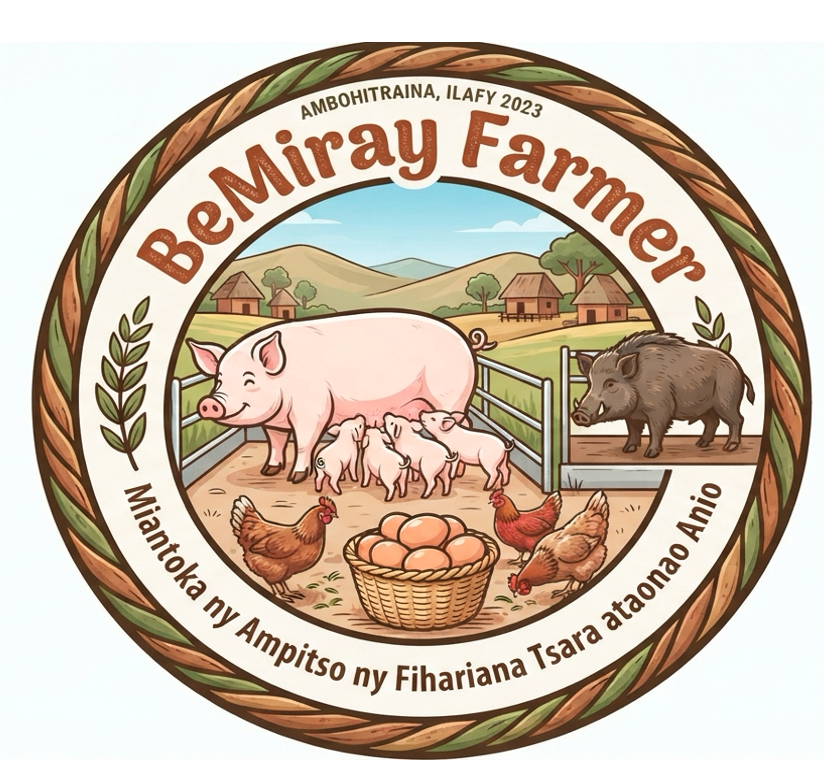

BeMiRAY Farmer — Gestion d'ÉlevageCentralisez le suivi des truies, gérez les performances des lots à l'engraissement et optimisez vos coûts d'alimentation en toute simplicité.
Truies en gestation
Porcs à l'engrais
Coût Aliment / kg
Taux de Sevrage
Suivi individuel et par lots (Démarrage, Croissance, Finition, Truies)
Ajustez les rations (Maïs, Soja, Son, CMV) selon le stade physiologique.
Une formulation rigoureuse automatisée réduit les coûts superflus de provende tout en garantissant un Gain Moyen Quotidien (GMQ) idéal pour atteindre les 100 kg à l'abattage.